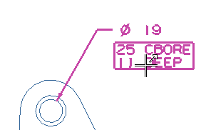
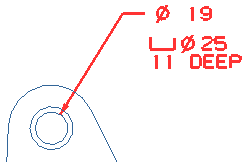
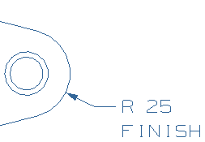
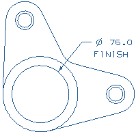

在附加文本中插入制图符号
-
将光标移动到尺寸值下方的附加文本上，注意到有一个方框出现在文本周围。

-
双击孔尺寸中的多行文本。
文本编辑器对话框出现。
您刚刚输入的文本仍然保留在编辑窗口中。
其它三个位置的箭头未被填充，表明这些位置上没有文本。

-
在文本第一行的数字2前单击，以将光标放置在该行起始位置。
-
从制图符号选项卡中的一串按钮中，点击沉头孔 ，然后点击直径 。
沉头孔和直径控制字符出现在编辑器中。
沉头 <#B><O>25
深度 11 -
在文本沉头后单击，然后点击退格以清除该文本。
可以在图纸页中预览文本编辑的结果。

-
将插入光标放在第二行的数字1前。
<#B><O>25
深度 11 -
在制图符号中，点击深度 。
-
清除文本深度。
-
点击对话框顶部的显示预览
 。
。将打开预览窗口并显示将在图纸中显示的文本。

-
再次点击显示预览以关闭预览窗口。
-
点击确定。
-
点击鼠标中键以取消选择尺寸。

您想要添加文本精加工到半径尺寸值的下方。
-
平移到另一个尺寸上。
-
双击尺寸 R 25以打开编辑尺寸对话框条。
-
右击高亮显示的尺寸并选择附加文本→下面。
-
在输入框中键入精加工。

-
单击鼠标中键。
尺寸现在包含您的注释。
在这个图纸上，您也需要附加文本精加工到大孔的孔尺寸中。
由于这个文本已经存在于这个图纸上的尺寸中，您只要简单地将它继承到新尺寸中。
